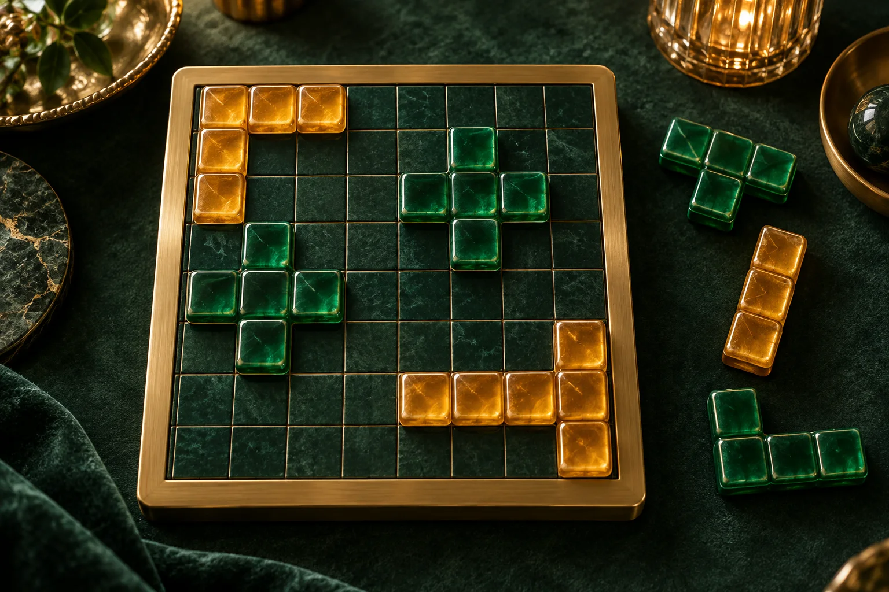

ПРОСТРАНСТВО ДЛЯ ВАШИХ РЕШЕНИЙ
Блоки 8×8.
Собирайте линии. Освобождайте пространство.

Ваш ритм игры
2 режимаИграйте спокойно: партия сохраняется автоматически
РейтингЛичный рекорд без помощи—
Рекорд и партия — на этом устройстве
Блоки 8×8.
ВРЕМЯ00:00
СЧЁТ0
Автосохранение на этом устройстве